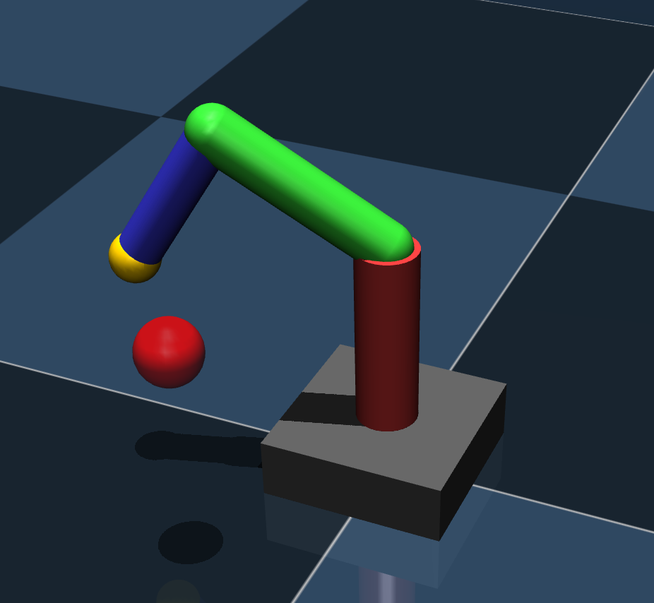
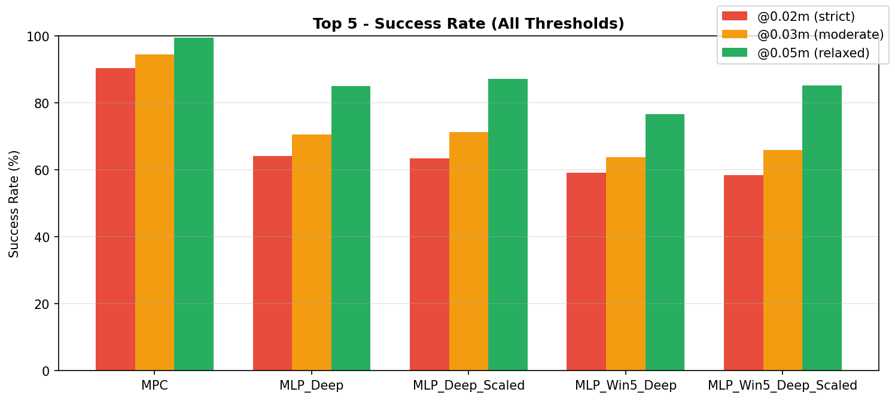
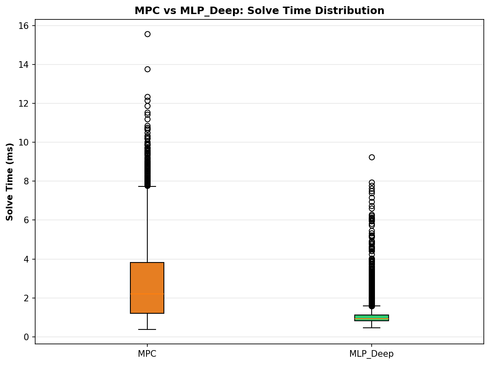

Behavior Cloning of MPC for 3-DOF Robotic Manipulators
Accepted Poster: IEEE ICRA 2026 Workshop on RL in the Era of IL
Theo Guegan, Wen Jie Dexter Teo - University of Waterloo
Problem
Model Predictive Control (MPC) provides strong tracking quality and stability for robotic manipulation, but it requires solving an optimization problem at every control step. This repeated solve introduces latency and runtime variability that can limit deployment in high-frequency control loops and on compute-constrained platforms. Our objective is to preserve the expert controller behavior while reducing inference time and computational load.
- System: 3-DOF manipulator in MuJoCo
- Task: reach random Cartesian targets in workspace
- Observable input: joint angles, joint velocities, and target position
Expert Controller and Dataset
We generate demonstrations using a hierarchical expert: IK computes a joint-space reference and MPC outputs torques.
Learning Setup
We formulate policy imitation as supervised regression from robot state and target to expert torque commands generated by the IK+MPC controller. The training data is collected from closed-loop expert rollouts, and models are optimized to minimize the discrepancy between predicted and expert actions. We compare static and temporal neural architectures to test whether explicit history improves control fidelity.
- Primary objective: minimize torque imitation error from expert demonstrations
- Training criterion: MSE (selected after loss-function comparison)
- Architectures evaluated: deep MLP, sliding-window MLP, and GRU
- Best performer: deep feedforward MLP for accuracy and runtime efficiency
Architecture Schema
Training uses expert supervision (IK + MPC); deployment replaces online optimization with a direct neural policy mapping from state and target to torques.
Fig 1 - Expert-to-policy architecture schema.

Main Result: Replacing IK + MPC with a Neural Policy
In deployment, the learned MLP replaces the online IK+MPC optimization loop: it maps current state and target directly to torques.
- Static MLP outperforms temporal models (GRU and sliding-window MLP).
- Current state is sufficient in this setup (Markov behavior is dominant).
- Neural policy is better suited for high-frequency real-time control.


Takeaway
We preserve most of the expert behavior while removing expensive online optimization. This demonstrates a practical path from IK + MPC to a lightweight neural controller for embedded and real-time robotic applications.